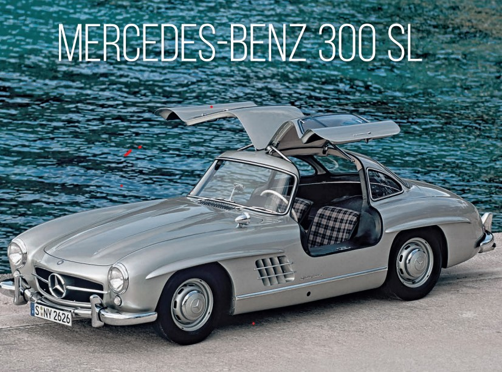
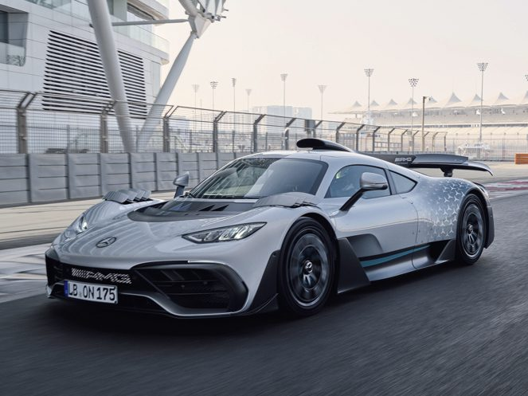

Modelli Iconici di Mercedes-Benz
| AUTO PIÙ VENDUTA | AUTO STORICA | AUTO CON PIÙ PRESTAZIONI |
|---|---|---|

Mercedes GLALa vettura di volume del marchio. Rappresenta l'equilibrio tra lusso accessibile, ingegneria robusta e qualità Mercedes. |
 300 SL "Ali di Gabbiano"Una leggenda assoluta (1954), famosa per le sue iconiche porte **"Ali di Gabbiano"** (Gullwing doors) e le innovazioni tecniche, è un'auto d'epoca tra le più desiderate al mondo. |
 Mercedes-AMG ONEL'apice delle prestazioni moderne. Un'hypercar ibrida che porta la tecnologia del motore di **Formula 1** direttamente su strada (con oltre 1000 CV). |